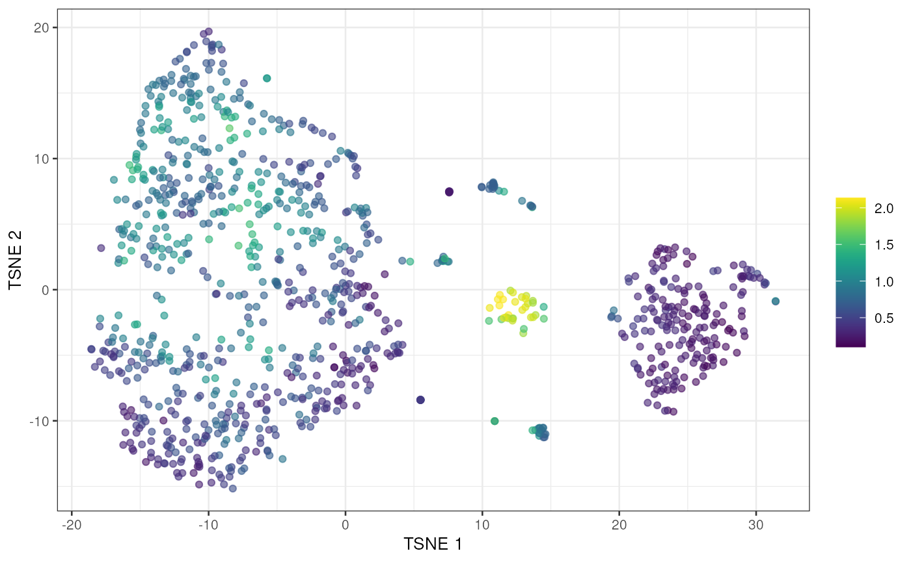

Scoring potential doublets from simulated densities
Aaron Lun
infinite.monkeys.with.keyboards@gmail.com2025-01-08
Source:vignettes/computeDoubletDensity.Rmd
computeDoubletDensity.Rmdtl;dr
To demonstrate, we’ll use one of the mammary gland datasets from the scRNAseq package. We will subset it down to a random set of 1000 cells for speed.
library(scRNAseq)
sce <- BachMammaryData(samples="G_1")
set.seed(1001)
sce <- sce[,sample(ncol(sce), 1000)]For the purposes of this demonstration, we’ll perform an extremely expedited analysis. One would usually take more care here and do some quality control, create some diagnostic plots, etc., but we don’t have the space for that.
library(scuttle)
sce <- logNormCounts(sce)
library(scran)
dec <- modelGeneVar(sce)
hvgs <- getTopHVGs(dec, n=1000)
library(scater)
set.seed(1002)
sce <- runPCA(sce, ncomponents=10, subset_row=hvgs)
sce <- runTSNE(sce, dimred="PCA")We run computeDoubletDensity() to obtain a doublet score
for each cell based on the density of simulated doublets around it. We
log this to get some better dynamic range.
set.seed(1003)
library(scDblFinder)
scores <- computeDoubletDensity(sce, subset.row=hvgs)
plotTSNE(sce, colour_by=I(log1p(scores)))
Algorithm overview
We use a fairly simple approach in doubletCells that
involves creating simulated doublets from the original data set:
- Perform a PCA on the log-normalized expression for all cells in the dataset.
- Randomly select two cells and add their count profiles together. Compute the log-normalized profile and project it into the PC space.
- Repeat 2 to obtain simulated doublet cells.
- For each cell, compute the local density of simulated doublets, scaled by the density of the original cells. This is used as the doublet score.
Size factor handling
Normalization size factors
We allow specification of two sets of size factors for different purposes. The first set is the normalization set: division of counts by these size factors yields expression values to be compared across cells. This is necessary to compute log-normalized expression values for the PCA.
These size factors are usually computed from some method that assumes most genes are not DE. We default to library size normalization though any arbitrary set of size factors can be used. The size factor for each doublet is computed as the sum of size factors for the individual cells, based on the additivity of scaling biases.
RNA content size factors
The second set is the RNA content set: division of counts by these size factors yields expression values that are proportional to absolute abundance across cells. This affects the creation of simulated doublets by controlling the scaling of the count profiles for the individual cells. These size factors would normally be estimated with spike-ins, but in their absence we default to using unity for all cells.
The use of unity values implies that the library size for each cell is a good proxy for total RNA content. This is unlikely to be true: technical biases mean that the library size is an imprecise relative estimate of the content. Saturation effects and composition biases also mean that the expected library size for each population is not an accurate estimate of content. The imprecision will spread out the simulated doublets while the inaccuracy will result in a systematic shift from the location of true doublets.
Arguably, such problems exist for any doublet estimation method without spike-in information. We can only hope that the inaccuracies have only minor effects on the creation of simulated cells. Indeed, the first effect does mitigate the second to some extent by ensuring that some simulated doublets will occupy the neighbourhood of the true doublets.
Interactions between them
These two sets of size factors play different roles so it is possible to specify both of them. We use the following algorithm to accommodate non-unity values for the RNA content size factors:
- The RNA content size factors are used to scale the counts first. This ensures that RNA content has the desired effect in step 2 of Section @ref(overview).
- The normalization size factors are also divided by the content size factors. This ensures that normalization has the correct effect, see below.
- The rest of the algorithm proceeds as if the RNA content size factors were unity. Addition of count profiles is done without further scaling, and normalized expression values are computed with the rescaled normalization size factors.
To understand the correctness of the rescaled normalization size factors, consider a non-DE gene with abundance . The expected count in each cell is for scaling bias (i.e., normalization size factor). The rescaled count is for some RNA content size factor . The rescaled normalization size factor is , such that normalization yields as desired. This also holds for doublets where the scaling biases and size factors are additive.
Doublet score calculations
We assume that the simulation accurately mimics doublet creation - amongst other things, we assume that doublets are equally likely to form between any cell populations and any differences in total RNA between subpopulations are captured or negligible. If these assumptions hold, then at any given region in the expression space, the number of doublets among the real cells is proportional to the number of simulated doublets lying in the same region. Thus, the probability that a cell is a doublet is proportional to the ratio of the number of neighboring simulated doublets to the number of neighboring real cells.
A mild additional challenge here is that the number of simulated cells can vary. Ideally, we would like the expected output of the function to be the same regardless of the user’s choice of , i.e., the chosen value should only affect the precision/speed trade-off. Many other doublet-based methods take a -nearest neighbours approach to compute densities; but if is too large relative to the number of real cells, all of the nearest neighbours will be simulated, while if is too small, all of the nearest neighbors will be original cells.
Thus, we use a modified version of the NN approach whereby we identify the distance from each cell to its -th nearest neighbor. This defines a hypersphere around that cell in which we count the number of simulated cells. We then compute the odds ratio of the number of simulated cells in the hypersphere to , divided by the ratio of to the total number of cells in the dataset. This score captures the relative frequency of simulated cells to real cells while being robust to changes to .
Session information
## R Under development (unstable) (2025-01-04 r87523)
## Platform: x86_64-pc-linux-gnu
## Running under: Ubuntu 24.04.1 LTS
##
## Matrix products: default
## BLAS: /usr/lib/x86_64-linux-gnu/openblas-pthread/libblas.so.3
## LAPACK: /usr/lib/x86_64-linux-gnu/openblas-pthread/libopenblasp-r0.3.26.so; LAPACK version 3.12.0
##
## locale:
## [1] LC_CTYPE=en_US.UTF-8 LC_NUMERIC=C
## [3] LC_TIME=en_US.UTF-8 LC_COLLATE=en_US.UTF-8
## [5] LC_MONETARY=en_US.UTF-8 LC_MESSAGES=en_US.UTF-8
## [7] LC_PAPER=en_US.UTF-8 LC_NAME=C
## [9] LC_ADDRESS=C LC_TELEPHONE=C
## [11] LC_MEASUREMENT=en_US.UTF-8 LC_IDENTIFICATION=C
##
## time zone: Etc/UTC
## tzcode source: system (glibc)
##
## attached base packages:
## [1] stats4 stats graphics grDevices utils datasets methods
## [8] base
##
## other attached packages:
## [1] bluster_1.17.0 scDblFinder_1.21.2
## [3] scater_1.35.0 ggplot2_3.5.1
## [5] scran_1.35.0 scuttle_1.17.0
## [7] ensembldb_2.31.0 AnnotationFilter_1.31.0
## [9] GenomicFeatures_1.59.1 AnnotationDbi_1.69.0
## [11] scRNAseq_2.21.0 SingleCellExperiment_1.29.1
## [13] SummarizedExperiment_1.37.0 Biobase_2.67.0
## [15] GenomicRanges_1.59.1 GenomeInfoDb_1.43.2
## [17] IRanges_2.41.2 S4Vectors_0.45.2
## [19] BiocGenerics_0.53.3 generics_0.1.3
## [21] MatrixGenerics_1.19.0 matrixStats_1.5.0
## [23] BiocStyle_2.35.0
##
## loaded via a namespace (and not attached):
## [1] jsonlite_1.8.9 magrittr_2.0.3 ggbeeswarm_0.7.2
## [4] gypsum_1.3.0 farver_2.1.2 rmarkdown_2.29
## [7] fs_1.6.5 BiocIO_1.17.1 zlibbioc_1.53.0
## [10] ragg_1.3.3 vctrs_0.6.5 memoise_2.0.1
## [13] Rsamtools_2.23.1 RCurl_1.98-1.16 htmltools_0.5.8.1
## [16] S4Arrays_1.7.1 AnnotationHub_3.15.0 curl_6.1.0
## [19] BiocNeighbors_2.1.2 xgboost_1.7.8.1 Rhdf5lib_1.29.0
## [22] SparseArray_1.7.2 rhdf5_2.51.1 sass_0.4.9
## [25] alabaster.base_1.7.2 bslib_0.8.0 htmlwidgets_1.6.4
## [28] desc_1.4.3 alabaster.sce_1.7.0 httr2_1.0.7
## [31] cachem_1.1.0 GenomicAlignments_1.43.0 igraph_2.1.3
## [34] mime_0.12 lifecycle_1.0.4 pkgconfig_2.0.3
## [37] rsvd_1.0.5 Matrix_1.7-1 R6_2.5.1
## [40] fastmap_1.2.0 GenomeInfoDbData_1.2.13 digest_0.6.37
## [43] colorspace_2.1-1 dqrng_0.4.1 irlba_2.3.5.1
## [46] ExperimentHub_2.15.0 textshaping_0.4.1 RSQLite_2.3.9
## [49] beachmat_2.23.6 labeling_0.4.3 filelock_1.0.3
## [52] httr_1.4.7 abind_1.4-8 compiler_4.5.0
## [55] bit64_4.5.2 withr_3.0.2 BiocParallel_1.41.0
## [58] viridis_0.6.5 DBI_1.2.3 HDF5Array_1.35.2
## [61] alabaster.ranges_1.7.0 alabaster.schemas_1.7.0 MASS_7.3-64
## [64] rappdirs_0.3.3 DelayedArray_0.33.3 rjson_0.2.23
## [67] tools_4.5.0 vipor_0.4.7 beeswarm_0.4.0
## [70] glue_1.8.0 restfulr_0.0.15 rhdf5filters_1.19.0
## [73] grid_4.5.0 Rtsne_0.17 cluster_2.1.8
## [76] gtable_0.3.6 data.table_1.16.4 metapod_1.15.0
## [79] BiocSingular_1.23.0 ScaledMatrix_1.15.0 XVector_0.47.1
## [82] ggrepel_0.9.6 BiocVersion_3.21.1 pillar_1.10.1
## [85] limma_3.63.2 dplyr_1.1.4 BiocFileCache_2.15.0
## [88] lattice_0.22-6 rtracklayer_1.67.0 bit_4.5.0.1
## [91] tidyselect_1.2.1 locfit_1.5-9.10 Biostrings_2.75.3
## [94] knitr_1.49 gridExtra_2.3 bookdown_0.42
## [97] ProtGenerics_1.39.1 edgeR_4.5.1 xfun_0.50
## [100] statmod_1.5.0 UCSC.utils_1.3.0 lazyeval_0.2.2
## [103] yaml_2.3.10 evaluate_1.0.1 codetools_0.2-20
## [106] tibble_3.2.1 alabaster.matrix_1.7.4 BiocManager_1.30.25
## [109] cli_3.6.3 systemfonts_1.1.0 munsell_0.5.1
## [112] jquerylib_0.1.4 Rcpp_1.0.13-1 dbplyr_2.5.0
## [115] png_0.1-8 XML_3.99-0.18 parallel_4.5.0
## [118] pkgdown_2.1.1 blob_1.2.4 bitops_1.0-9
## [121] viridisLite_0.4.2 alabaster.se_1.7.0 scales_1.3.0
## [124] purrr_1.0.2 crayon_1.5.3 rlang_1.1.4
## [127] KEGGREST_1.47.0